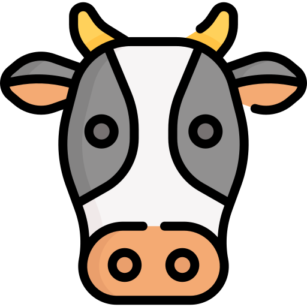
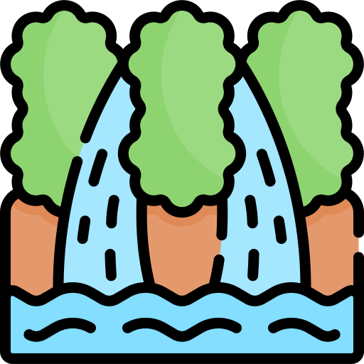
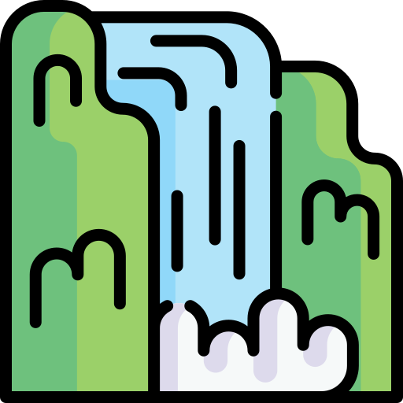

Actividades
Actividades
Actividades comerciales
 Agricultura
Agricultura
Por la gran variedad de climas, la fertilidad de su suelo, la tenacidad de sus gentes, su laboriosidad y espíritu creativo, Pacho cuenta con numerosos recursos naturales y económicos, como son: la agricultura con sus variados productos de clima cálido, templado y frío: café, naranjas y otros cítricos, fresas, papayas, piñas, bananos, plátano, verduras, legumbres, papa, yuca, hortalizas, maderas, plantas medicinales y flores.
Pacho produce la mejor naranja del país calificada como la más Dulce de Colombia. Su demanda domina los mercados de la Capital de la república y su prestigio llega a nivel internacional. El municipio de Pacho cuenta con numerosos árboles en plena producción y otros en desarrollo.
 Ganadería
Un renglón valioso de su economía es la ganadería que comprende: vacunos que proporcionan materia prima para algunas industrias lácteas como el queso, cuajadas, kumis, yogurt y otros; porcinos y ovinos; también son importantes los conejos, la apicultura y la piscicultura, sin olvidar las aves de corral: pollos, gallinas, patos y pavos.
Los caballos han dado renombre a nivel nacional e internacional por la esbeltez de su paso
fino colombiano.
 Minería e industrias
Minería e industrias
En la minería se destaca la explotación de carbón mineral en la vereda Cerro Negro cerca de la vía de Zipaquirá; en cuanto a la industria, aparte de las ya mencionadas: polvorearía, tecno ingeniería, merecen nombrarse la fábrica de Cerámicas de la familia Cárdenas en el sitio La Ferrería, donde se elaboran, aunque en pequeña escala, hermosas piezas de exportación por una de las cuales, consistente en un Ajedrez con figuras mitológicas, ganó un premio en el Japón.
Otros
A nivel familiar funcionan algunas microempresas como: panaderías, criadero de aves, talleres metal mecánicos, ebanisterías, sastrerías, pañalerías, supermercados, miscelanias, restaurantes, centros de entretenimiento, droguerías, tiendas de ropa y calzado, joyerías y pequeños centros comerciales.
Sitios y actividades turísticas
 Chorro de Veraguas
El chorro de veraguas es un hermoso espacio natural en donde cae un ligero y poco voluminoso chorro de agua desde una altura de aproximadamente 25 metros, ubicado en la vereda de Veraguas a 13 km del casco urbano del municipio se encuentra a tan solo 40 minutos en automovil.
"Para ver su ubicación y opiniones pulse aquí"
 Cerveza Artesanal
Cerveza Artesanal
Lord Wallace es una cervecería artesanal ubicada en el municipio de pacho ubicada en le kilómetro 5 vía a la vereda San Miguel desde el casco urbano del municipio. Si te gusta conocer lo autóctono de los lugares, tienes que probar este sabor.
"Para ver su ubicación y opiniones pulse aquí"
Gampling
Guaia Terra Gampling es un hotel tipo Gampling ubicado a 3.3 km del casco urbano por la vía pacho-zipaquirá con desvío por el sector la cabrera, este coexiste con un segundo hotel tipo Gampling de nombre Portal del bosque ubicado en el kilómetro 5 por la vía a la vereda San Miguel pocos metros antes que la cervecería Lord Wallace.
"Para ver su ubicación y opiniones pulse aquí"
 Chorro de Virginia
El chorro de virginia es una cascada de aproximadamente 500 metros proveniente de un nacimiento de agua ubicado en un páramo pachuno, este es posiblemente el sitio turístico que requiere mayor capacidad física puesto que se ubica aproximadamente a 10 km del casco urbano y un tercio de su recorrido debe realizarse caminando por el río proveniente del chorro, por lo que es recomendable realizarse con una persona guía.
"Para ver su ubicación y opiniones pulse aquí"
 Horno de la ferrería
Horno de la ferrería
En el municipio de Pacho se declaró el Horno de la Ferrería como patrimonio histórico de Cundinamarca por la Academia de Historia, ya que allí se realizaron las primeras fundiciones de hierro de Suramérica y algunos elementos fabricados utilizados en las diversas batallas realizadas por el líder Antonio Nariño. Ubicado en el barrio La Ferrería a 1 km del Parque Principal. Su construcción data en el año 1837 y estuvo a cargo de expertos franceses como el Sr. Cipriano Medardo Merlín.
"Para ver su ubicación y opiniones pulse aquí"
Torre de los indios
Ubicada en la vereda la Ramada al noroeste de la población de Pacho a 12 km, con una altitud de 3000 m.s.n.m., un paisaje monumental con formaciones rocosas, se aprecia y es denominada la torre de los indios con una altura aproximada de 20 metros.
"Para ver su ubicación y opiniones pulse aquí"